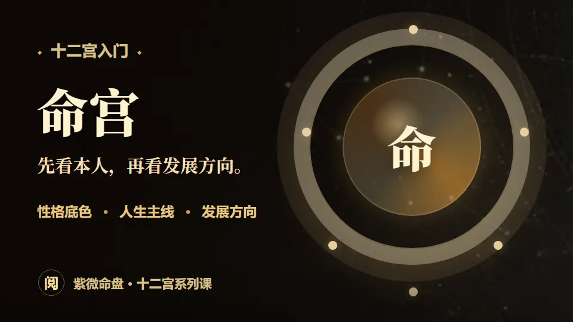
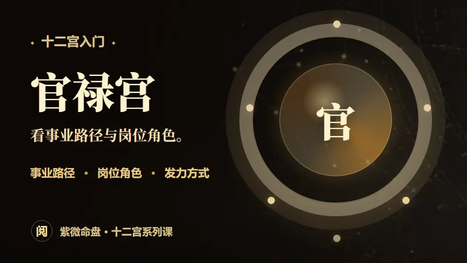
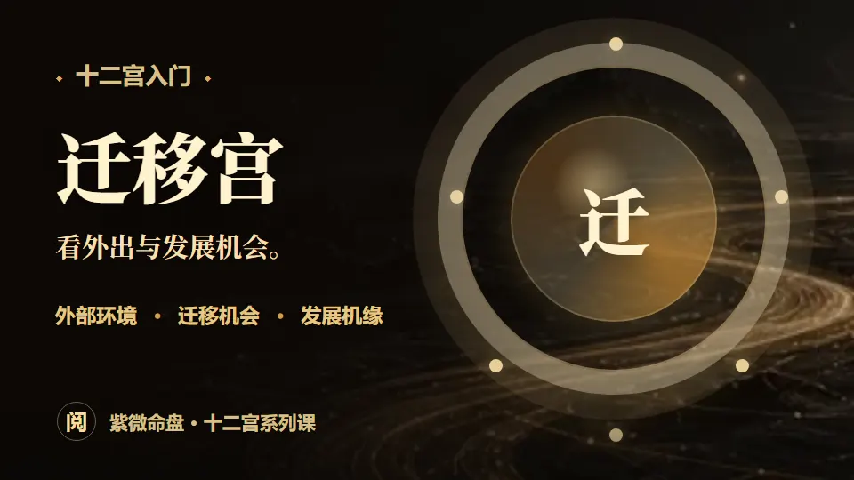

很多人拿到自己的命盘，第一件事就是翻到命宫，然后问一句：我这个命，到底好不好？
这个问题，其实问偏了。
你去车站问一个人"我这趟车好不好"，售票员没法回答。车没有好不好，只有开往哪里。命宫也一样——它回答的从来不是"你几分"，而是"你适合往哪个方向走"。
倪师在讲命宫的时候，说过一句很朴素的话：看出一个人的发展模式，就可以鼓励他、诱导他往最适合的那条路上走，他的人生就比较愉快了。
命宫是一份使用说明，不是一张成绩单
我们习惯给东西打分。考试有分数，业绩有排名，于是看命盘也想找出一个"我几分"。
但命宫的功能不是评分。
「命宫：讲你自己，本人的先天。生下来是什么咖？」
它讲的是你天生带着什么样的性子、什么样的行为模式，遇到事情第一反应是什么。这些东西不决定你成不成，只决定你用哪种方式去成。
命宫讲的是你怎么走，不是你能走多远
一个性子急的人，让他去做需要慢慢磨的活，他会很痛苦；换到一个要快速反应的位置，他反而如鱼得水。人没变，位置变了。

你是不是也卡在这里
先看看自己属于哪一种，再往下读。
第一种：一直觉得自己"命不好"，因为努力了很久，回报却没来。
第二种：明明很拼，却总在怀疑"是不是我不适合做这个"。
第三种：看着别人走得轻松，自己怎么走都觉得费劲。
如果你中了其中一条，先别急着否定自己。你要检查的可能不是"命好不好"，而是"路对不对"。
你不是不够好，可能只是站错了地方
命好，不如限好
这是《天纪》里一句很要紧的话。
「命好不如限好。有人命中财官迁移很普通，但是他的科权禄全在这个十年大运中，一发如雷。有的人命很好，但是他的限不好，半空折翅。」
什么意思？
命，是你出厂时的底子；限，是你这十年走的那段路。底子普通的人，赶上一段好路，也能一飞冲天；底子好的人，走在不顺的十年里，一样施展不开。
你现在不顺，不等于你命不好，可能只是走在一段难走的路
看懂这一点，很多自责就可以放下了。你不是不行，你只是还没走到属于你的那段路。
底子普通不可怕，可怕的是在错的十年里硬拼
看命宫，要连着三个宫一起看
倪师特别提醒过，看命宫不能只看一个格子。
「看命宫的时候，一定要同时兼看三个宫：财帛、官禄、迁移。」
「人的本命：命、官禄、财帛、迁移。」
命宫是你的性子，财帛是你怎么挣钱，官禄是你适合做什么事，迁移是你在什么环境里更顺。四个合起来，才拼得出一个完整的你。
性子、挣钱、做事、环境，四张拼图缺一不可
单看命宫下结论，就像只看一个字就猜整篇文章

所以那些拿着一颗星就说"你这辈子完了"的话，你可以不当真。它连全貌都没看到。
三步，把命宫读成方向
讲了这么多，落到你能做的事上，其实就三步。
- 把问句换掉。别再问"我命好不好"，改问"我适合怎么走"。这一步给你的，是从评判自己切换到了解自己。
- 认出自己的模式。回想一下，你做什么事的时候最不累、最容易进入状态？那份不费力，就是命宫给你的线索。这一步给你的，是一条不用硬撑的路。
- 把位置调对。同一个性子，放错地方是缺点，放对地方就是长处。你现在觉得别扭，可能只是站错了位置。这一步给你的，是换个环境再试一次的勇气。
最后
命宫不是用来认命的。
它是用来让你少走一点冤枉路、多一点"原来我可以这样"的。
你不需要变成一个更好的人，你只需要回到更适合你的那条路上。
